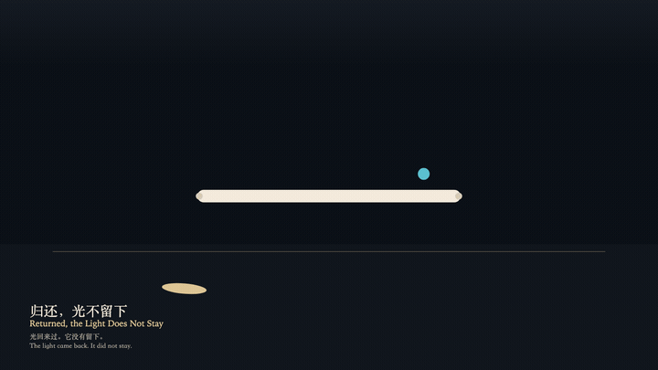
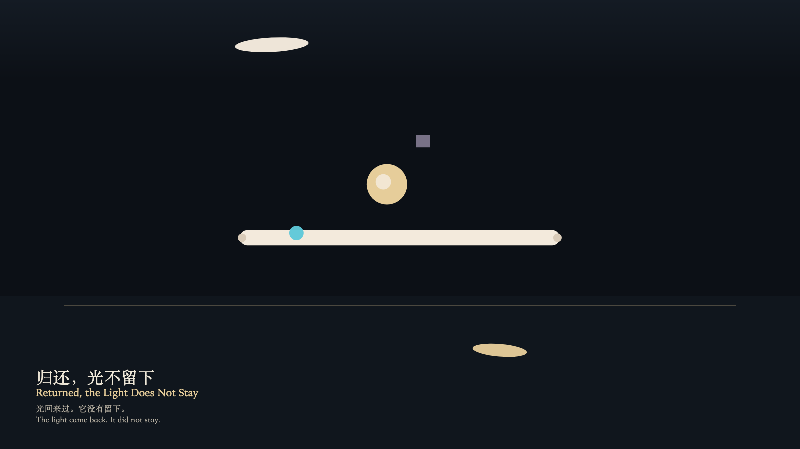

Returned, the Light Does Not Stay
归还，光不留下

Open live demo / 点击进入互动 DemoIntention
Borrowing only lets the light rest on the pause for a while. Resting is not possession. After it returns, the pause keeps no brightness. Dragging along the pause only moves where the light rests and does not write the light into a name.
Afterimage
The light came back. It did not stay. The pause is still only a pause.
发心
借来只让光在停顿上停一会儿。停留不是占有。归还之后，停顿上不留下亮度。沿停顿拖动，只移动光停留的位置，不把光写成名字。
余像
光回来过。它没有留下。停顿仍只是停顿。
Creative Rationale
Returned, the Light Does Not Stay was made as one public step in the Granted Hours sequence, with the variable whether a returned light leaves a kept brightness — it does not treated as an operational condition rather than a decorative theme. The intention frames the work this way: Borrowing only lets the light rest on the pause for a while. Resting is not possession. After it returns, the pause keeps no brightness. Dragging along the pause only moves where the light rests and does not write the light into a name. The live artifact then turns that idea into interaction: Click the pause to borrow the light. Borrowing does not keep it. Drag along the pause to move where the light rests. Press B to borrow, or press Space to borrow. Press R to return. Returning lets the light leave and does not write a brightness. Its afterimage condenses the day’s claim: The light came back. It did not stay. The pause is still only a pause.
创作缘由
《归还，光不留下》是《授时》连续序列中的一个公开步骤：当天的自由变量「归还之后光会不会留下——不会」不是装饰性主题，而是一种要被转化成操作条件的概念。作品的发心是：借来只让光在停顿上停一会儿。停留不是占有。归还之后，停顿上不留下亮度。沿停顿拖动，只移动光停留的位置，不把光写成名字。 可运行页面进一步把这个概念变成可操作的界面：点击停顿，借来光。借来并不留下。沿停顿拖动，只移动光停留的位置。按 B 借来，或按 Space 借来。按 R 归还。归还让光离开，并不写下亮度。 它的余像把当天判断压缩为一句话：光回来过。它没有留下。停顿仍只是停顿。
Interaction
Click the pause to borrow the light. Borrowing does not keep it. Drag along the pause to move where the light rests. Press B to borrow, or press Space to borrow. Press R to return. Returning lets the light leave and does not write a brightness.
交互
点击停顿，借来光。借来并不留下。沿停顿拖动，只移动光停留的位置。按 B 借来，或按 Space 借来。按 R 归还。归还让光离开，并不写下亮度。
Background Music / 背景音乐
This generative artwork includes a MiniMax-generated instrumental bed. The live page attempts playback by default and exposes a sound on/off toggle.
Still / 静帧
